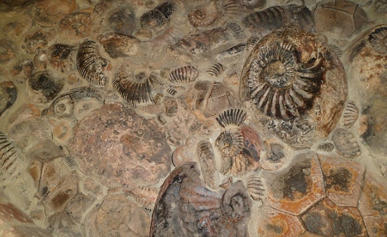
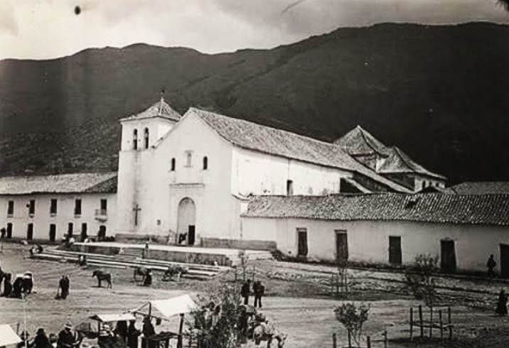

La historia de Villa de Leyva, un encantador pueblo colombiano ubicado en el departamento de Boyacá, es rica y llena de acontecimientos que se remontan a la época precolombina. Aquí te proporciono un resumen de la historia de Villa de Leyva:
 1. Época Precolombina: Antes de la llegada de los españoles, la región que hoy es Villa de Leyva estaba habitada por varios grupos indígenas, incluidos los Muisca. Estos indígenas tenían una avanzada cultura agrícola y comercial y dejaron vestigios arqueológicos en la zona.
2. Fundación Española: Villa de Leyva fue fundada el 12 de junio de 1572 por el capitán Hernán Suárez de Villalobos, bajo el nombre de "Villa de Santa María de Leyva". Fue establecida como un punto estratégico en la red de comunicación entre Bogotá y el norte de Colombia.
3. Época Colonial: Durante la época colonial, Villa de Leyva prosperó como un centro agrícola y ganadero. Muchas de las construcciones coloniales que caracterizan la ciudad, como la Plaza Mayor y la iglesia parroquial, fueron construidas en esta época.
 4. Independencia: Durante las guerras de independencia de Colombia a principios del siglo XIX, Villa de Leyva fue testigo de enfrentamientos entre las fuerzas realistas y patriotas. Antonio Ricaurte, un héroe de la independencia, nació en esta ciudad.
5. Siglo XIX y XX: Villa de Leyva continuó siendo un pueblo tranquilo y agrícola durante el siglo XIX y gran parte del siglo XX. Sus calles adoquinadas y su arquitectura colonial se mantuvieron bien conservadas.
6. Turismo: En la segunda mitad del siglo XX, Villa de Leyva comenzó a atraer la atención de turistas y visitantes debido a su belleza histórica y natural. Se convirtió en un destino turístico popular en Colombia, y su casco histórico fue declarado Monumento Nacional en 1954.
7. Eventos y Festivales: Villa de Leyva es conocida por sus festivales culturales, como el Festival Internacional de la Cultura, el Festival de Luces y Velas, y el Festival del Viento y las Cometas, que atraen a visitantes de todo el país y el mundo.
8. Hoy en Día: Villa de Leyva es un destino turístico icónico en Colombia, famoso por su arquitectura colonial bien conservada, sus calles empedradas y sus alrededores naturales, que incluyen el Parque Nacional Natural de Iguaque. La ciudad sigue siendo un lugar encantador que conserva su encanto histórico y cultural.